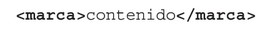
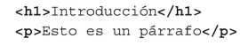
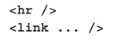
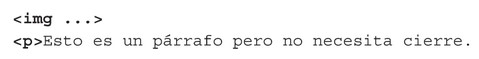

Etiquetas y Atributos
En HTML las etiquetas se escriben con el siguiente formato:

La etiqueta aquí representada se llama marca y vemos que la etiqueta de comienzo y la etiqueta de cierre se distinguen en que la de cierre comienza por una barra inclinada (/). En HTML hay muchas etiquetas emparejadas como estas:

Pero HTML también permite tener algunas etiquetas sin emparejar. Estas etiquetas terminan con una barra inclinada:

Incluso hay etiquetas que no necesitan una etiqueta de cierre:

En HTML las etiquetas se pueden escribir en mayúsculas o minúsculas, indistintamente. El bloque contenido entre una etiqueta de inicio y otra de cierre (o una etiqueta sin emparejar) lo llamaremos elemento. Veremos que lo normal es que unos elementos estén contenidos dentro de otros elementos. De esta forma daremos estructura al documento.